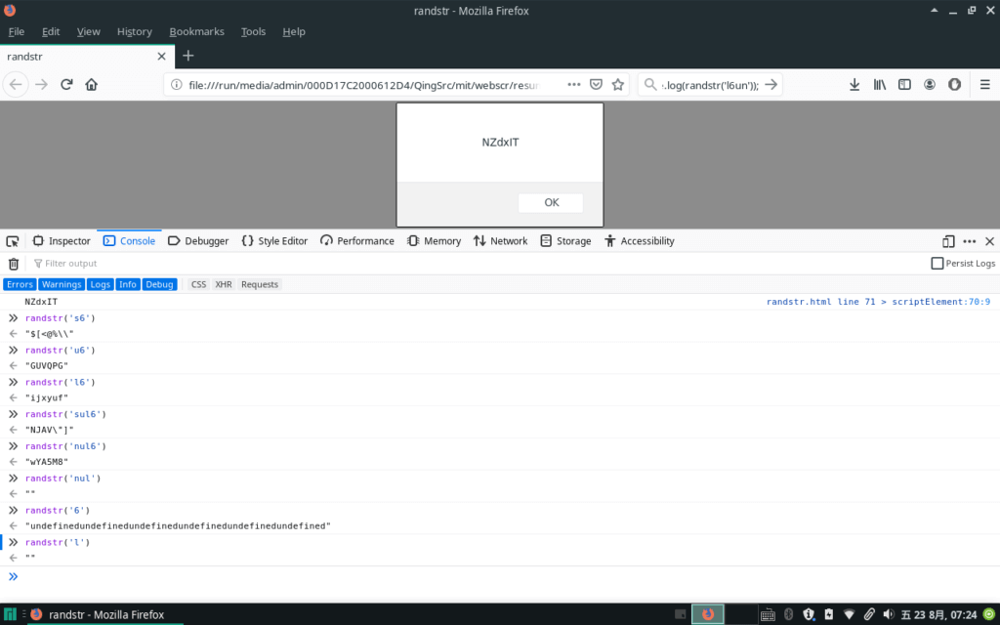

问题
解决方案
首先我们需要随机生成一个数字，Math.random()*m 生成一个0~m的随机数，然后用这个随机数索引出一个随机字符。
可见字符的ascii码为33到126，以下取得随机字符的方法相当优雅：
解决之道是，先定制一个字符母串strs，用strs[Math.floor(Math.random()*strs.length]取得随机字符。以下是代码实现：
1 2 3 4 5 6 7 8 9 10 11 12 13 14 15 16 17 18 19 20 21 22 23 24 25 26 27 28 29 30 31 32 33 34 35 36 37 38 39 40 41 42 function randstr(args='snul8'){ //s:special character特殊字符 //n:number数字 //u:upper case大写字母 //l:lower case小写字母 //数字8用作控制生成随机字符的长度,也可以是其他数字 //默认参数snul8，生成8位随机字符串，包含特殊字符，数字和大小写字母 var special = '!"#$%&\'()*+,-./:;<=>?@[\\]^_`{|}~';//有些特殊字符如'和\要加\转义 var number = '0123456789'; var lower = 'abcdefghijklmnopqrstuvwxyz'; var upper = 'ABCDEFGHIJKLMNOPQRSTUVWXYZ'; var strs = '';//用作母串载体 var str = '';//用作随机字串载体 var num= args.replace(/[^0-9]/ig,"");//取得args中的数字，作密码长度 if(args.search("s")!=-1){//如果args中有s,母串中含有特殊字符 strs += special; } if(args.search("n")!=-1){//如果args中有n,母串中含有数字 strs += number; } if(args.search("u")!=-1){//如果args中有u,母串中含有大写字母 strs += upper; } if(args.search("l")!=-1){//如果args中有l,母串中含有小写字母 strs += lower; } var len = strs.length; for (i=0; i<num; i++){ j = Math.floor(Math.random()*len); str += strs[j] } return str; } str = randstr('l6un'); console.log(str); alert(str);

讨论
至此，我们已经实现了一个随机字符生成器，但要作为一个密码器使用，还是得完善一些东西。在某些浏览器上弹出窗口可能不能被复制，而很多移动终端并没有控制台，所以得将字符串写入网页中去。更进一步的，在网页还需要一键复制的按钮，以及远程保存的按钮。而如果涉及保存的话，还得实现加密，因为保存原始密码并不安全也不推荐。